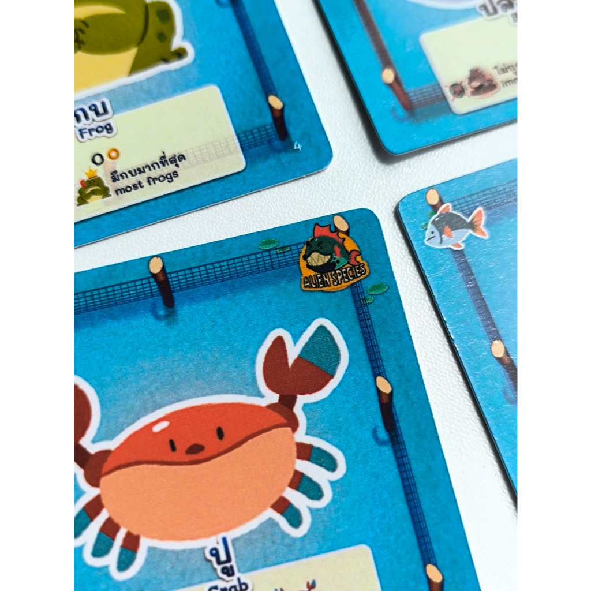
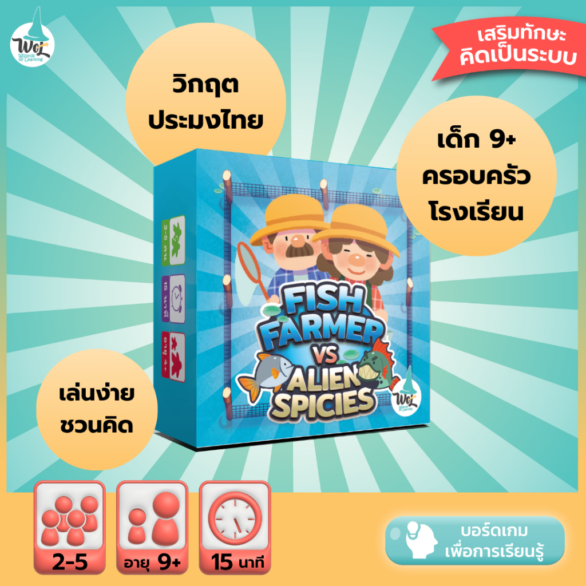

ประเด็นจริงอยู่ในระบบเกม
ปัญหาปลาหมอคางดำไม่ได้ถูกเล่าเป็นบทเรียนแยก แต่กลายเป็นผลกระทบที่ผู้เล่นต้องเจอระหว่างตัดสินใจ
เกมพกพาที่เอาประเด็นปลาหมอคางดำมาใส่ในกลไกเกมโดยตรง ผู้เล่นรับบทชาวนาสัตว์น้ำ เลือกสัตว์น้ำ ทำคะแนน และรับมือกับเอเลียนสปีชีส์ที่เข้ามากระทบระบบ

ปัญหาปลาหมอคางดำไม่ได้ถูกเล่าเป็นบทเรียนแยก แต่กลายเป็นผลกระทบที่ผู้เล่นต้องเจอระหว่างตัดสินใจ
ใช้เวลาประมาณ 15 นาที เล่นจบได้เร็ว เหมาะกับบ้าน ห้องเรียน หรือกิจกรรมสั้นๆ ที่ต้องการเปิดบทสนทนา
หลังเล่นจบ เด็กและผู้ใหญ่คุยต่อได้ว่าเมื่อธรรมชาติเปลี่ยนไป เราจะรับมืออย่างไร

มีเกมสั้นๆ ที่เล่นกับลูกแล้วคุยต่อเรื่องโลกจริงได้
ใช้เป็นสื่อเปิดบทเรียนเรื่องสิ่งแวดล้อม ระบบนิเวศ หรือเอเลียนสปีชีส์
ใช้เป็นกิจกรรม warm-up หรือ station learning ที่เข้าใจง่าย

หน้า Shopee รวมภาพสินค้า รายละเอียด และช่องทางสั่งซื้อไว้ครบ เหมาะสำหรับคนที่อยากซื้อไปใช้ที่บ้าน ห้องเรียน หรือกิจกรรมสิ่งแวดล้อม
เปิดหน้าสินค้า Fish Farmerเหมาะสำหรับครอบครัว ห้องเรียน และคนที่อยากเริ่มคุยเรื่องสิ่งแวดล้อมผ่านประสบการณ์ที่สนุกและจับต้องได้